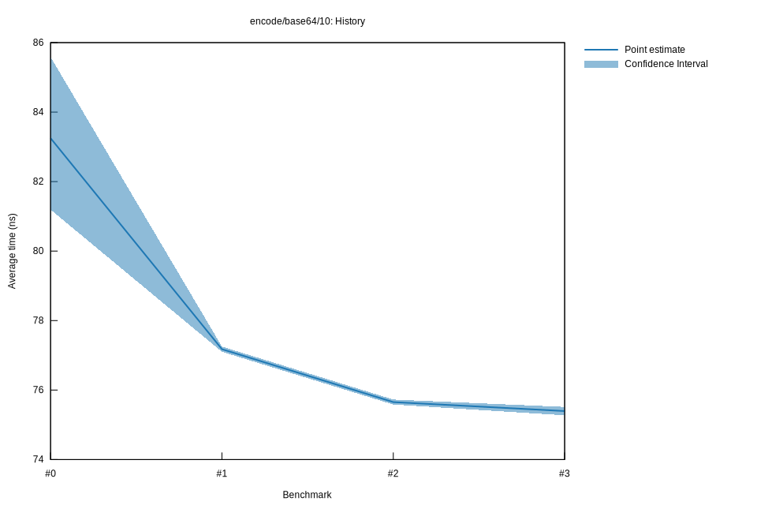

# 32022-10-15T17:13:24+03:00
|
Lower Bound |
Estimate |
Upper Bound |
| Value: |
75.27ns |
75.40ns |
75.51ns |
| Throughput: |
152.03MiB/s |
151.79MiB/s |
151.55MiB/s |
| Change in Value: |
-0.5767% |
-0.1788% |
+0.3870% |
| Change in Throughput: |
+0.5800% |
+0.1791% |
-0.3855% |
Change within noise threshold.
# 22022-10-15T16:48:47+03:00
|
Lower Bound |
Estimate |
Upper Bound |
| Value: |
75.58ns |
75.65ns |
75.73ns |
| Throughput: |
151.41MiB/s |
151.27MiB/s |
151.12MiB/s |
| Change in Value: |
-2.2158% |
-2.0523% |
-1.8732% |
| Change in Throughput: |
+2.2660% |
+2.0953% |
+1.9090% |
No change in performance detected.
# 12022-10-08T17:25:32+03:00
|
Lower Bound |
Estimate |
Upper Bound |
| Value: |
77.10ns |
77.18ns |
77.25ns |
| Throughput: |
148.43MiB/s |
148.29MiB/s |
148.14MiB/s |
| Change in Value: |
-12.911% |
-10.224% |
-7.6719% |
| Change in Throughput: |
+14.826% |
+11.388% |
+8.3094% |
No change in performance detected.
# 02022-10-08T17:06:32+03:00
|
Lower Bound |
Estimate |
Upper Bound |
| Value: |
81.19ns |
83.25ns |
85.59ns |
| Throughput: |
140.95MiB/s |
137.47MiB/s |
133.72MiB/s |